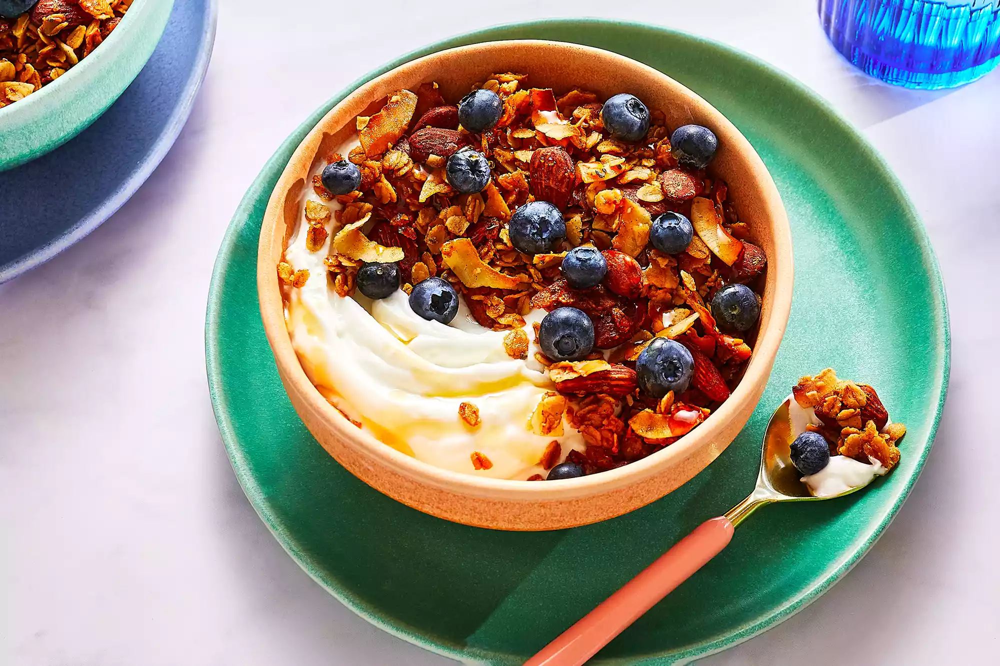

Coconut Granola

Ingredients
- 5 cups rolled oats
- 2 cups almonds
- 2 cups unsweetened shredded coconut
- 1 ¼ cups maple syrup
- ½ cup coconut oil
- 1 egg white
- 2 tablespoons chia seeds
- 1 teaspoon cinnamon
- 1 teaspoon cardamom
- 1 teaspoon kosher salt
Directions
- Preheat oven to 350 degrees F (175 degrees C). Line two rimmed baking sheets with parchment paper.
- Combine all ingredients in a large bowl. Use your hands or a wooden spoon to thoroughly mix, until oats
and nuts are well coated. Spread mixture onto prepared baking sheets in an even layer.
- Bake until golden brown, about 40 minutes. Stir granola and rotate pans 20 minutes into baking time so
that it browns evenly.
- Cool completely, then transfer to lidded containers or jars. Store at room temperature for up to two
weeks. Serve with milk, yogurt, or your choice of fruit (I like berries, peaches, mango or pineapple).